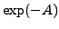
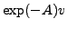
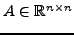
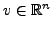

A well-known problem in the computation of matrix functions is the lack of a clear notion of a residual for many matrix functions. Although it is possible to define a residual for some matrix functions such as the inverse or the square root, for many important matrix functions including the matrix exponential, no natural notion for residials seems to exist.
In this paper, we introduce an approach which yields a natural definition of the residuals for the matrix exponential. The approach is based on an alternative formulation of the problem of computing  or  for given  and . Based on the approach, we propose a new definition for the matrix exponential residual. We show how the obtained residual definition can be used to get new stopping criteria in iterative methods for computing the matrix exponential. This is done in the context of two groups of iterative methods. The first one is the Krylov subspace methods, where we pay special attention to the recently proposed shift-and-invert Lanczos/Arnoldi methods of Moret-Novati (2004) and van den Eshof-Hochbruck (2006). The proposed residual appears to satisfy a Galerkin condition in this case. The second group is the Chebyshev polynomial methods as studied e.g. by Tal Ezer (1989) and recently used by Benzi-Razouk (2007) for sparse matrices with a rapid decay in entries.